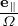
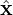
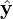
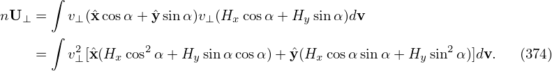
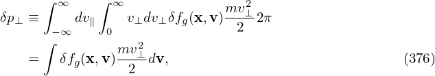

The perturbed distribution function δF given in Eq. () contains two terms. The first term is gyro-phase dependent while the second term is gyro-phase independent. The perpendicular velocity moment of the second term will give rise to the so-called diamagnetic flow. For this case, it is crucial to distinguish between the distribution function in terms of the guiding-center variables, fg(X,v), and that in terms of the particle variables, fp(x,v). In terms of these denotations, equation () is written as
| (365) |
Next, consider the perpendicular flow U⊥ carried by δfg. This flow is defined by the corresponding distribution function in terms of the particle variables, δfp, via,
| (366) |
where n is the number density defined by n = ∫ δfpdv. Using the relation between the particle distribution function and guiding-center distribution function, equation (366) is written as
| (367) |
Using the Taylor expansion near x, δfg(x −ρ,v) can be approximated as
| (368) |
Plugging this expression into Eq. (367), we obtain
| (369) |
As mentioned above, δfg(x,v) is independent of the gyro-angle α. It is obvious that the first integration is zero and thus Eq. (369) is reduced to
| (370) |
Using the definition ρ = −v × e∥∕Ω, the above equation is written
where H =

×∇δfg(x,v), which is independent of the gyro-angle α because both e∥(x)∕Ω(x) and δfg(x,v) are independent of α. Next, we try to perform the integration over α in Eq. (371). In terms of velocity space cylindrical coordinates (v∥,v⊥,α), v⊥ is written as| (372) |
where

and
are two arbitrary unit vectors perpendicular each other and both perpendicular to B0(x). H can be written as| (373) |
where Hx and Hy are independent of α. Using these in Eq. (371), we obtain

Using dv = v⊥dv∥dv⊥dα, the above equation is written as
where

is the perpendicular pressure carried by δfg(x,v). The flow given by Eq. (375) is called the diamagnetic flow.
![∫ ∫ ∫
nU = ∞ dv ∞ v dv 2πv2 [ˆx(H cos2 α+ H sin αcosα)+ ˆy(H cosαsinα + H sin2α)]dα
⊥ − ∞ ∥ 0 ⊥ ⊥ 0 ⊥ x y x y
∫ ∞ ∫ ∞ ∫ 2π
= dv∥ v⊥dv ⊥ v2⊥ (ˆxHx cos2α + ˆyHy sin2α)dα
∫−∞∞ ∫0∞ 0
= dv∥ v⊥dv ⊥[v2⊥ (xˆHx π + ˆyHyπ)]
∫− ∞ ∫0
∞ ∞ 2
= − ∞ dv∥ 0 v⊥dv ⊥[v⊥H π ]
∫ ∞ ∫ ∞ e
= dv∥ v⊥dv ⊥[v2⊥ -∥× ∇ δfg(x,v )π ]
− ∞ ∫ 0∞ ∫ ∞ Ω
= e∥× ∇ dv v dv δf (x,v)v2⊥-2π
Ω −∞ ∥ 0 ⊥ ⊥ g 2
e∥--
= mΩ ×∇ δp⊥, (375)](nonlinear_gyrokinetic_equation434x.png)